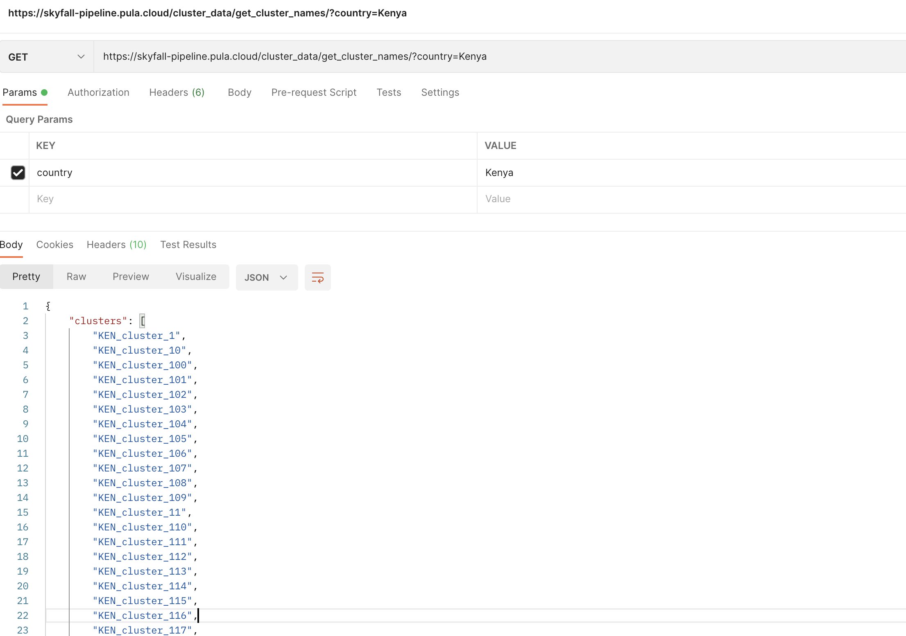
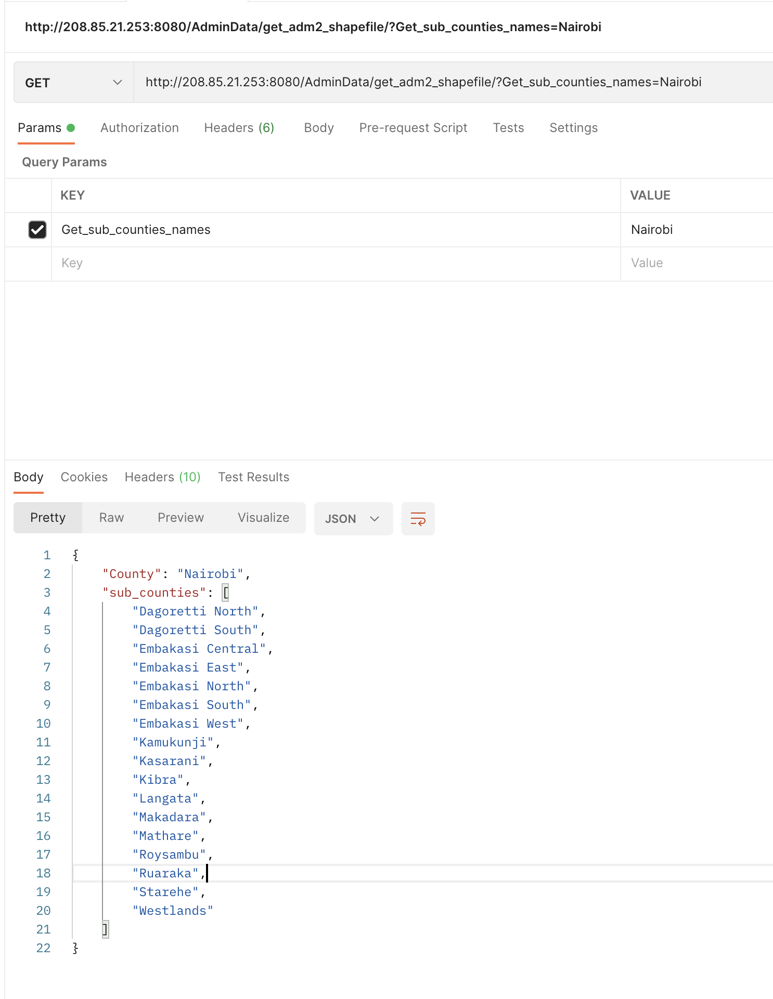
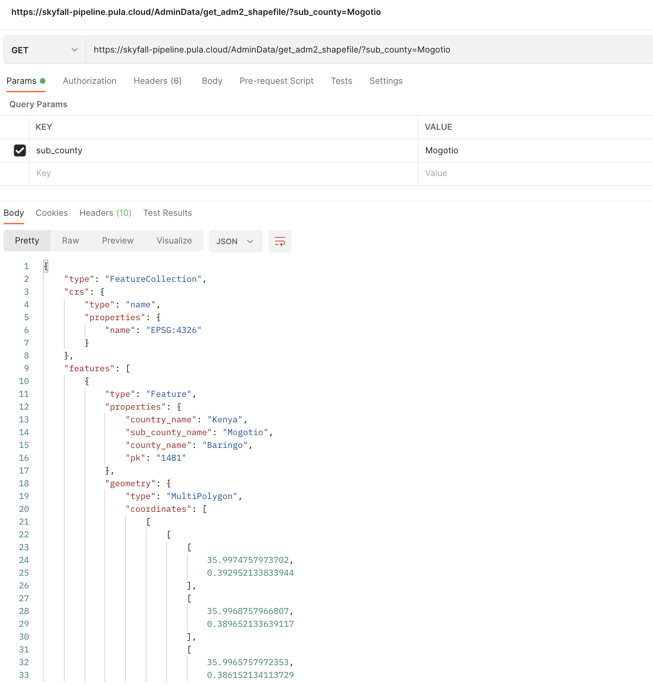
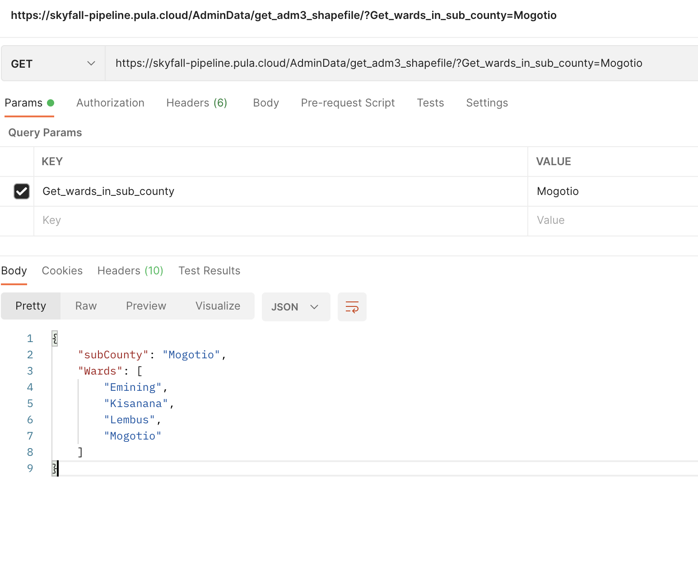
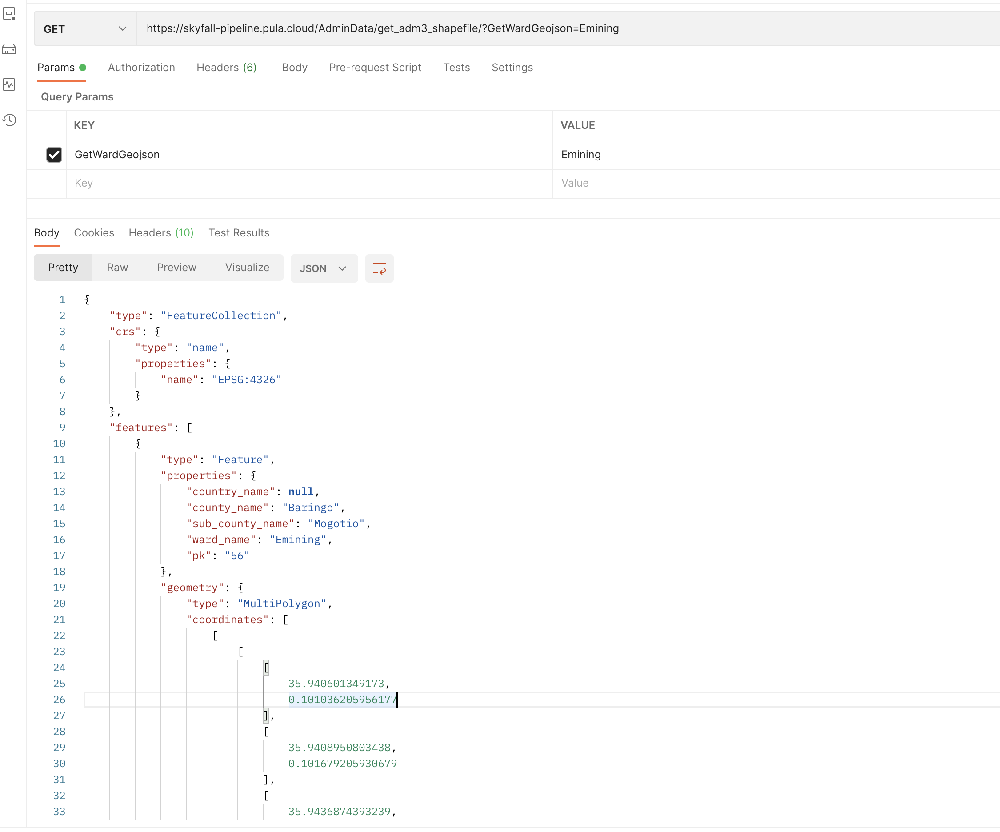

Admistration or administrative boundaries are layers we are using to map diffirent places
they are basically shapefiles or feature collection and vary according to the levels
Admistration level zero (0)
This the country level dataset
a. Country list
Returns list of countries available in the system by querying;
Each country available may have projects differing in the sence of crop calenda and covrage,
this api returns the projects available for a respective country, remember the country name has to be from the,
country list api.
clusters are what may be considered unit of insurance, they are usually created to simulate or,
represent areas with homegenearity in terms of climate, soils and topography. to get list of names of clusters
in a country query the api as follows.
Please Note in the current version of skyfall backend some counties may not have the clusters thus analysis is,
done using the lower administrative boundary(s). In such a case the api may return an json with an empty list

Admistration level one (1)
This is the first level of administrative boundary for diffirent locations (Jurisdiction)
the name varies in the case of Kenya they are refered to as Counties.
Counties list
This county list is what the list of counties available for that country this is provided for from the back end by looping
through the field in the database that contains the names.
Administrative level two in the Kenya context means the sub-counties or constituencies
There are the second leve of administrative boundary a number of administrative level two, forms a county
Sub-county list (admin 2)
The query is made giving a county name; the api returns list of names sub-counties (admin 2) within a county, the names recieved from Admin1names are used to query for the names for the
sub-counties
county_name field of the ADM2DATA is filter and an iteration is done to the field of sub_county_names to get the names
The Query is done as followshttps://skyfall-pipeline.pula.cloud/AdminData/get_adm2_shapefile/?Get_sub_counties_names=Nairobi

API request for admin2 names
Sub-County (admin2) dataset
This api request returns the actual Geojson file given the admin2 name
Note the name has to be in the array of sub_county_names since the data is a query to the database. It returns a feature collection
sub_county= the name of the sub_county is placed after the = sign

API request for sub_county feature collection
Admistration level three (3)
Administrative level three in the Kenya context means the wards
This is the third administrative boundary
Wards list (admin 3)
The query is made giving a sub-county name; the api returns list of names wards (admin 3) within a sub-county,
the names recieved from Admin2names are used to query for the names for the wards
sub_county_name field of the ADM3DATA is filtered and an iteration is done to the field of ward_names to get the names
The Query is done as followshttps://skyfall-pipeline.pula.cloud/AdminData/get_adm3_shapefile/?Get_wards_in_sub_county=Mogotio

API request for admin3 names
ward (admin3) dataset
This api request returns the actual Geojson file given the admin3 name
Note the name has to be in the array of ward names since the data is a query to the database. It returns a feature collection
ward= the name of the ward is placed after the = sign

API request for ward feature collection
Unit Area of Insurance (UAI) (4)
As detailed earlier UAI are used to do analysis for crop insurance puporses in the context of PULA
Details on how to access the respective cluster names in a country, county and in some instances sub-county have been
provided earlier in previous sections. This sub-section shows how to access the geojson for the clusters for visualization and other purposes.